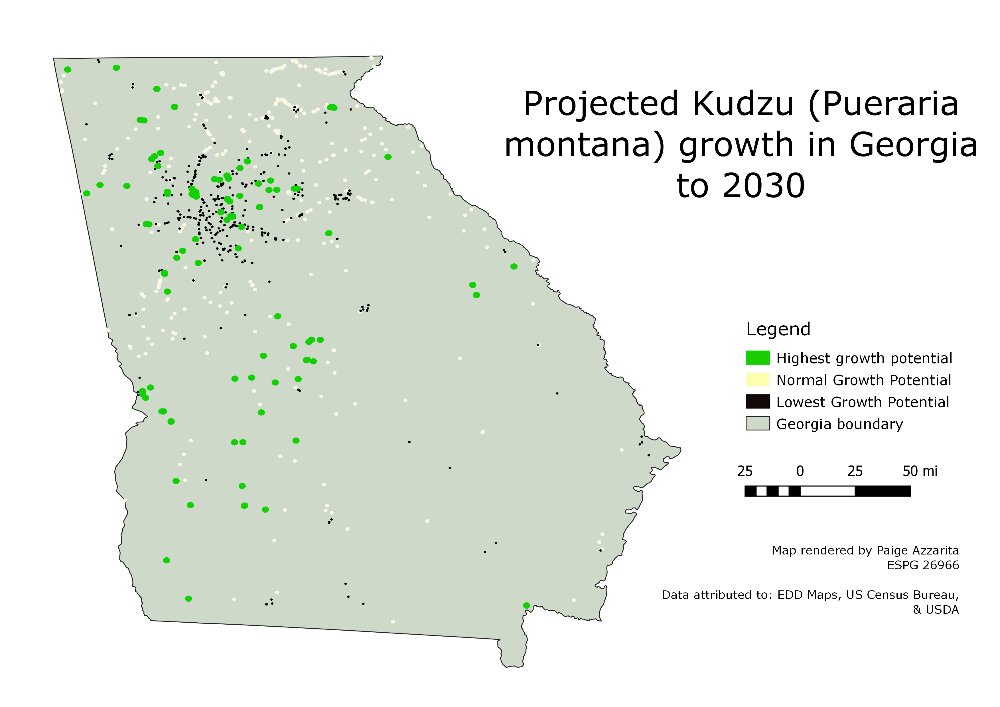

Homework 10: Geoprocessing Tools
Paige Azzarita
Is Kudzu taking over Georgia>
In this project, I wanted to answer the question: "If Kudzu growth continues, how severe will the infestation become in the next 10 years?" Kudzu is an invasive species that is one of the fastest growing plant species in the United States, with growth rates around 1 foot per day. Its rapid growth in US climates, especially the southeast, has made it a major threat to forest areas. In this map, I used point data of Kudzu populations in the US, and isolated it to points in Georgia using the intersect function. I then identified which areas were most likely to grow and which were least likely to grow by creating two sets of intersects, one with high groundwater levels, and one wth urban areas. I then added buffers with varying sizes based on the average growth rates of the plant throughout the course of the year, and multiplied by 10 to see how much area the plants could be expected to cover in the next 10 years. For the areas with the lowest expected growth (with urban area intersect), I used a buffer of 1825 feet, equal to 1/2 the normal growth rate over ten years, or .5 feet per day. The areas with the most growth (the high groundwater regions) have a buffer size of 7300 feet, or a rate of 2 feet of growth per day for ten years. The mid-range buffers have a size of 3650 feet, as is the expected growth of one foot per day.

Data and Sources
Kudzu points shapefile download
Link to kudzu points source
Georgia boundary shapefile download
Urban areas shapefile download
Link to Georgia boundaries and urban areas source
Groundwater recharg area shapefile download
Link to groundwater source